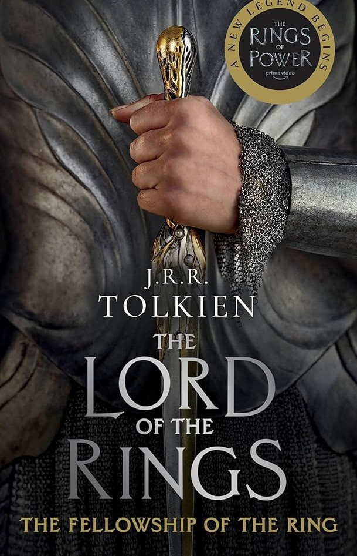
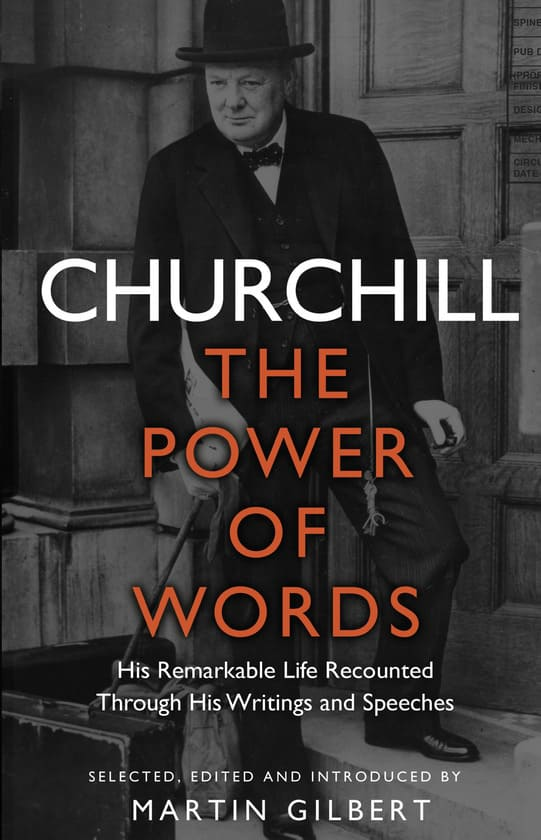

The Best Genres To Read
What Is That?
Yeah... Somehow you still don't know about such things. But don't worry – we will explain it to you.
Literary genres are categories that help us organize stories based on their style, content, and tone. They act as a "contract" between the writer and the reader. Easy to say there are types of books, which have their own features.
The Most Popular Genres
These are some of the most popular genres of literature you could witness:
- Fiction
-

- Fantasy: includes magical elements, imaginary worlds, and supernatural creatures (e.g., The Lord of the Rings).
- Science Fiction: explores "what if" scenarios involving future technology, space travel, or time machines
- Mystery/Thriller: focuses on solving a crime or dealing with high-stakes tension and suspense.
- Romance: centers on human relationships and emotional connections.
- Non-Fiction
-

- Biography/Autobiography: the story of a real person's life (e.g. Churchill. The Power of Words).
- Academic/Scientific: books that focus on facts, research, and education
- The "New" Genres
-

- Dystopia: shows a dark, challenging future society (e.g., The Hunger Games)
- Magical Realism: a realistic world where one or two magical elements are treated as perfectly normal.
{kind=link}
{kind=link}
The Genres Importance
Genres are not cages; they are windows. While they provide a structure for the story, the best writers often blend them to create something unique. Whether the person writes a gritty detective story or a cosmic fantasy, the genre is simply the language he uses to reach your heart.